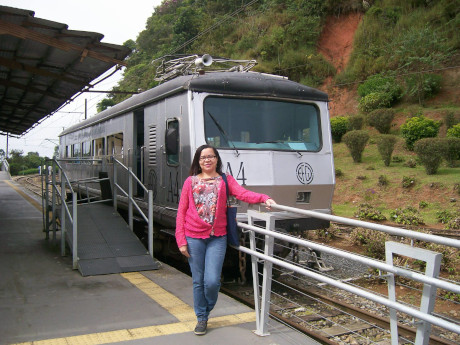
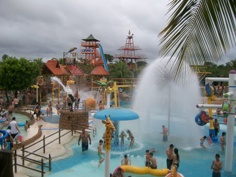

Meu nome é Maria Inez, sou Coordenadora de Gestão Pedagógica Geral e Profa. de Língua Portuguesa,
Caso queira conhecer-me, continue navegando neste Blog!
Como falar comigo?
/Acompanhe-me no Facebook!
/Adicione-me no Linkedin.
/Acesse o meu Google Classroom.
/Siga-me no Instagram!
Projetos Pedagógicos
Veja o
Acesse o Artigo - Leituras Sociodramáticas – Africanidades: Interconexões, fuxicos, milongas e os griots.Trabalho vindouro do estágio da Pós-Graduação em Psicodrama Socioeducacional na ABPS (2018).
Conheça esses Lugares!
Indico alguns lugares ideais para curtir um feriado prolongado ou férias. Trem Turístico - Campos de Jordão - SP e Parque Aquático - "Rio Quente"/ GO.
 Aumente o repertório de sua Cultura
Visite o museu - Casa Guilherme de Almeida